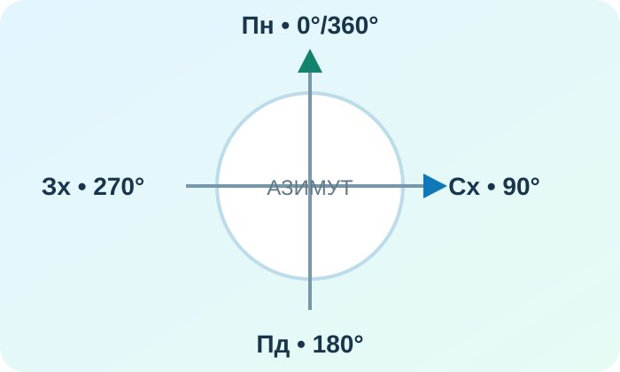

Станція A — Обрати джерело
Потрібно перевірити, як змінилася берегова лінія водойми за 15 років. Що найкраще?
Мета уроку — не переписати контрольну, а зрозуміти, де саме збився алгоритм: джерело → карта → напрям → масштаб → легенда → доказ.
Позначте твердження, яке найкраще описує труднощі після ДТР‑1. Сторінка підкаже, яку корекційну станцію пройти першою.


Доказове питання: чому ці три зображення не можна вважати взаємозамінними джерелами?
Потрібно перевірити, як змінилася берегова лінія водойми за 15 років. Що найкраще?

Який азимут відповідає східному напрямку?
На карті 4,2 см. Масштаб 1:250 000.
На тематичній карті темніший відтінок означає більше значення показника. Чи можна сказати, що темніша область обов’язково більша за площею?
На OpenStreetMap знайдіть Запоріжжя. Визначте два об’єкти, що позначені умовними знаками, і поясніть, яку інформацію про них карта не дає без додаткового джерела.
Перегляньте коротке повторення про читання карти. Під час перегляду випишіть три кроки, які допомагають уникати механічних помилок.
Учень каже: «На карті масштабу 1:500 000 об’єкти зображені детальніше, ніж на карті 1:50 000, бо число 500 000 більше».
Питання: що надійніше — запам’ятати правильну відповідь чи відновити правильний алгоритм?
Повторіть §§1–13 лише за тими пунктами, де сьогодні була помилка. Для повторення використайте Всеукраїнську школу онлайн. Запишіть одну помилку у форматі: «я думав(ла) → правильне правило → як перевірю себе наступного разу».
Уявіть, що клас обирає безпечне місце для табору. Вмикайте три шари схематичної карти й обґрунтуйте рішення за всіма даними. На реальній місцевості потрібні додаткові перевірки.
А — біля річки; Б — на крутому схилі; В — на відносно пологій ділянці поблизу дороги. Оберіть варіант і поясніть, які шари використали.
Спочатку зіставте річку, горизонталі й доступність.
Порівняйте цю навчальну схему з OpenStreetMap Запоріжжя ↗. Якої інформації для безпечного табору обом картам може бракувати?
4 км4000 метрів
Алгоритм: сантиметри × знаменник масштабу → сантиметри на місцевості → метри або кілометри.
Стовпчики нормовані до найбільшої відстані, графік оновлюється під час зміни відстані на карті.
Тест відкривається тільки після введення імені, прізвища та класу.